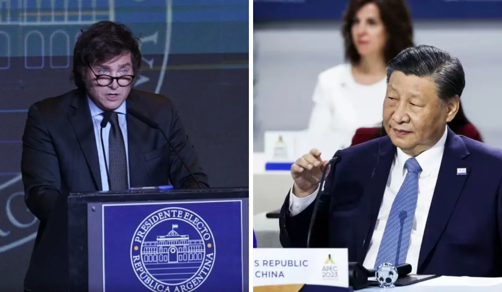

La nueva relación de Milei con China: viaje de la canciller, swaps y temas espinosos

El Presidente encomendó a Mondino una visita oficial a Beijing: inversiones, defensa y geopolítica entre los nuevos ejes del vínculo del Gobierno con China.
Más allá de la retórica beligerante con Beijing y la estrecha relación que la Argentina sembró con su enemigo, Estados Unidos, el gobierno de Javier Milei está dispuesto a avanzar en el pragmatismo de la diplomacia con hechos concretos hacia China: enviará a la canciller Diana Mondino en visita especial y buscará relanzar los vínculos comerciales para atraer inversiones.
Mondino llegará a Beijing el 27 de abril con una agenda especial y reuniones de alto nivel político del gobierno de China. La decisión de Milei de habilitar este viaje tiene que ver con una cuestión de practicidad económica para traer dólares, continuar con las inversiones chinas y asegurar para la Argentina la extensión de la línea de Swaps con yuanes.
"Si bien el presidente Milei mantiene diferencias políticas insalvables con China podemos seguir avanzando en el interés de ambas partes", dijo a El Cronista un funcionario del gobierno que prepara detalles del viaje de la canciller Mondino a Beijing.
Las diferencias "insalvables" que hay entre el gobierno de Milei y el de Xi Jinping se encuentran el enfoque capitalista a ultranza del argentino y el comunismo moderno del chino, sumado a los roces por el caso de Taiwán, la Argentina busca un vínculo "maduro y razonable" con China.
La canciller Mondino llevará a su visita oficial una "agenda positiva" que contempla, entre otras cosas, inversiones en litio en Argentina, la fabricación de autos eléctricos, la venta de productos agrícolas y alimentos elaborados y el incremento del flujo comercial entre ambos países a pesar de que la balanza es altamente deficitaria para el país.
Mondino ya adelantó parte de esta estrategia: se reunió con su par chino, Wang Yi, al margen de la conferencia de Seguridad en Munich y dialogó sobre la relación bilateral y la política de "una sola China", el marco de referencia territorial que demanda Beijing a sus socios a partir del enfrentamiento que mantiene con la isla de Taiwán.
La agenda en China
La visita de Mondino se está trabajando en la Casa Rosada y en la Cancillería. También desde Beijing aporta lo suyo el flamante embajador Marcelo Suárez Salvia, quien llegó hace menos de un mes y ya mantuvo contactos con gran parte de la administración de Xi Jinping.
En la visita de Mondino se prevé un encuentro con su par chino Qin Gang; el vicepresidente de la Asamblea Popular de China, Wu Weihua, el tercer hombre en la línea de sucesión del presidente Xi Jinping y empresarios chinos que responden al régimen comunista.
Más allá de los temas "positivos", también en la mesa de negociaciones que lleva Mondino estarán los "temas espinosos", como lo grafican en la Casa Rosada y la Cancillería.
Entre otros temas complicados se encuentra la falta de financiación de las represas en Santa Cruz; el proyecto para la construcción de un reactor nuclear con tecnología china y la compra de Argentina de 24 aviones supersónicos norteamericanos que China quería vender al país y no pudo. Sobre este tema el gobierno argentino no dará demasiadas explicaciones.
Swaps y relaciones dañadas
La canciller Mondino también viaja China con el mandato de Milei de arreglar los acuerdos por la extensión de una línea de swaps con yuanes que le serviría a la Argentina para pagar deuda al FMI. La última extensión de Swaps fue de unos u$s 6.000 millones y la Argentina aspira a ampliar más esa oferta. En esas negociaciones intervienen los dos bancos centrales y los niveles políticos más altos.
La visita de Mondino a Beijing buscará dar con un relanzamiento de las relaciones bilaterales que quedaron muy dañadas al principio del mandato de Milei. Es que el Presidente cuestionó en duros términos el régimen comunista y hubo mucho malestar de Beijing.
Hacia enero hubo un encuentro reservado de Milei con el vicepresidente de la Asamblea Popular de China, Wu Weihua, el tercer hombre en la línea de sucesión del presidente Xi Jinping.
La Casa Rosada no dio detalle alguno de ese encuentro pero la canciller Diana Mondino habló tangencialmente del tema y admitió que Milei y Wu "hablaron de muchos temas". Allí Milei le entregó una carta para Xi Jinping con elogios a su administración.
Mondino sólo dijo que se habló de una relación de largo aliento, las posibles inversiones y la necesidad de establecer "un vínculo con transparencia". Es decir, que se dejen de lado los acuerdos secretos como los que firmó Cristina Kirchner o Alberto Fernández con Beijing en los últimos años.
El gesto de Milei de acercamientos con China llegó luego de las duras expresiones contra Beijing, la decisión de no ingresar a los BRICS (Brasil, India, China, Rusia y Sudáfrica) y los ataques de Mondino contra el régimen comunista.